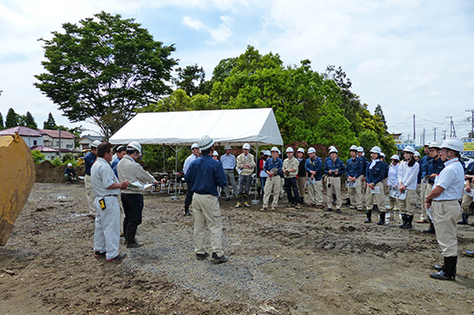
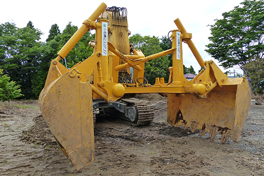
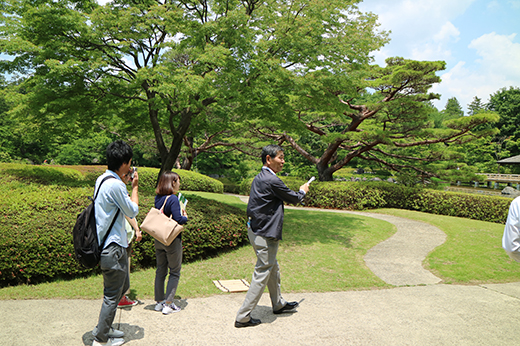
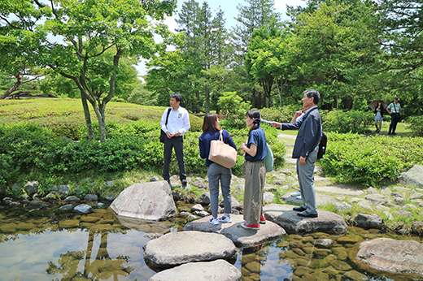
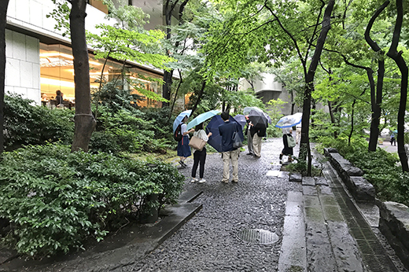
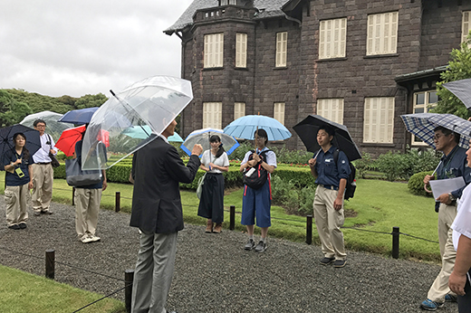

人材育成
Human Resource Development
プロフェッショナルの育成に
力を注いでいます。
「自然と共生する空間づくりのプロフェッショナル集団」をめざして、
私たちは、さまざまな⼈材育成の取り組みを行っています。
当社が特許を保有する緑化技術や実務のなかで発掘された新技術について
社員が知識・ノウハウを共有できる場を設け、スキルアップにつなげています。
また、みどりの先駆者として、日本を代表する作品から
伝統的な空間構成や技術を学び、新たな空間創造に取り組んでいます。
大型専用機械移植工法
「TPM 工法」研修会
2014年5月27日、当社が特許を所有する大径木機械移植工法「TPM 工法」の研修会を千葉県
大網白里市の圃場にて開催しました。
- 
「TPM 工法」は また、伐採の選択しかなかった大径木が移植可能となり貢献にも寄与する工法です。研修会では、工法とは異なる移植方 、 大径木の樹形を変えずに法や、そのスケール感を短時間に移植ができ、高い活着率を誇る移植工法です。 実際に大径木が動く様を間近で体感することができました。 既存のみどりを保護・保全できる環境見ることができ、在来工法とは異なる移植方法や、そのスケール感を体感することができました。
- 
伝統 技法・伝統を学ぶ
造園技術講座
空間構成や伝統技術を学ぶ造園技術講座を 、2017年から定期的に開催しています。
-

造園技術講座の様子
小形研三氏が手がけられた国営昭和記念公園日本庭園、小川治兵衛氏が手がけられた旧古川庭園、 深谷光軌氏が手がけられた京王プラザホテルなど、日本を代表する庭園作品を当社技術顧問と視察し、作庭者の意図や現在の状況などについて意⾒交換し、実際の実務に活かせる訓練をしています。また、社内でも実際の現場で実践した内容などの発表会や講座を実施し、社内間での共有化を図っています。
-

国営昭和記念公園「日本庭園」
-

京王プラザホテル
-

旧古川庭園
-

社内での研修発表会